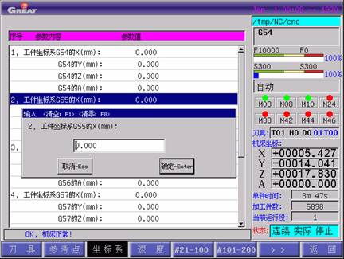
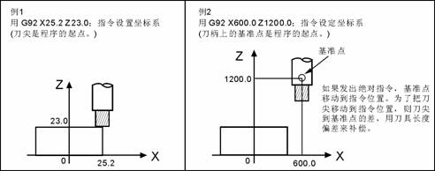

| 坐标系统 |
本参数中指的坐标系为工作坐标系，即工件加工时使用的坐标系也称作工件坐标系，由CNC预先设置。一个加工程序可设置一个工件坐标系,也可设置多个工件坐标系，工件坐标系可以用移动它的原点来改变。即参数中坐标系的值是其自身坐标原点（零点）在机床坐标系中的坐标值。  图1工件坐标系的设置 移动上下光标可选择当前需要修改的工件坐标系，然后按Enter键弹出输入对话框，进行输值。 这六个工件坐标系可由用户设置，在程序中用G54，G55，G56，G57，G58，G59指令调用。 注：1、本参数中不包括机床坐标系G53，因为其是根据机床参考点建立的，是不可修改的一个固定值。 2、工件坐标系的初始建立通常是在手动情况下，根据加工情况有偏差时再到参数下修改。如：刀具移动到某一点后选择相应的坐标系，设置当前坐标系的坐标值为某一个值，此时系统自动计算出当前坐标系原点在机床坐标系中的坐标值，并保存在参数中。当加工后发现有偏差时，可在参数界面下修改相应工件坐标系的坐标值。 |
|
坐标系设置指令(G92)用来设定工件坐标系。
说明：G92指令不产生动作，只用来设定工件坐标系。其中X，Y，Z字段是指刀具上的点(例如刀尖)在所设定的工件坐标系中的坐标位置。如果在刀具长度偏置期间用G92 设定坐标系，则用无偏置的坐标值设定坐标系刀具半径补偿被G92 临时删除。  图2 例3 N0000 G92 X65.2 Y100 Z28 表示建立工件坐标系，且当前已处于X＝65.2，Y＝100，Z＝28的工件坐标位置。 |